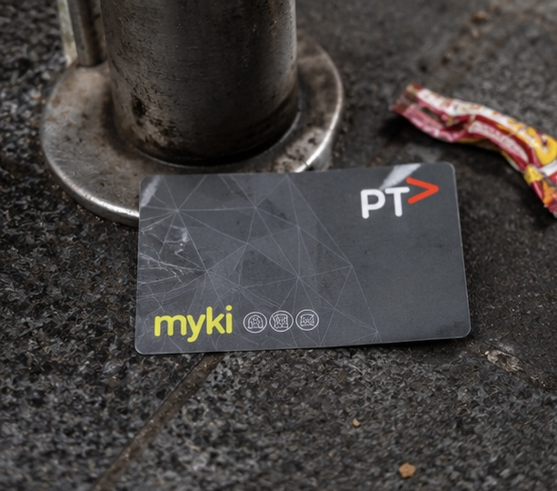
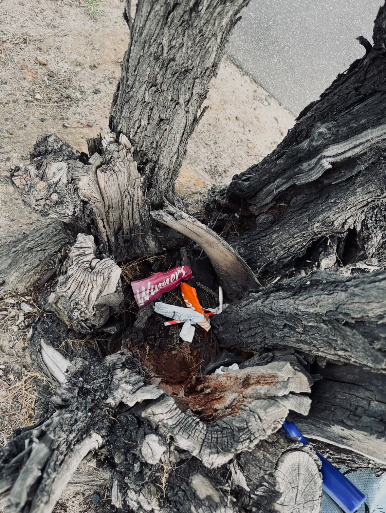
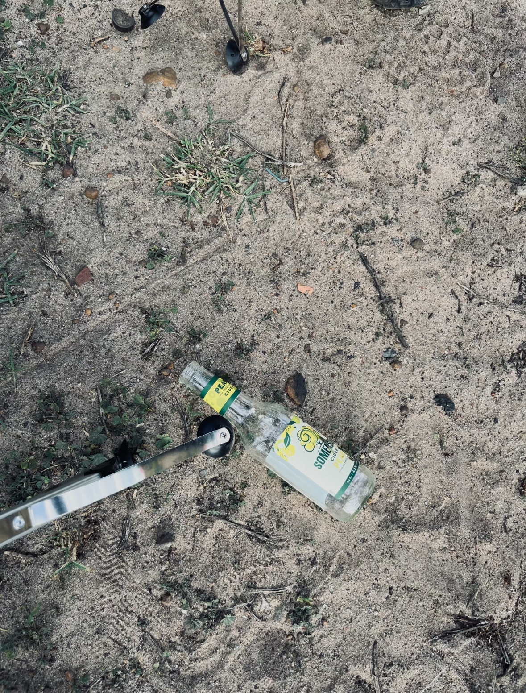
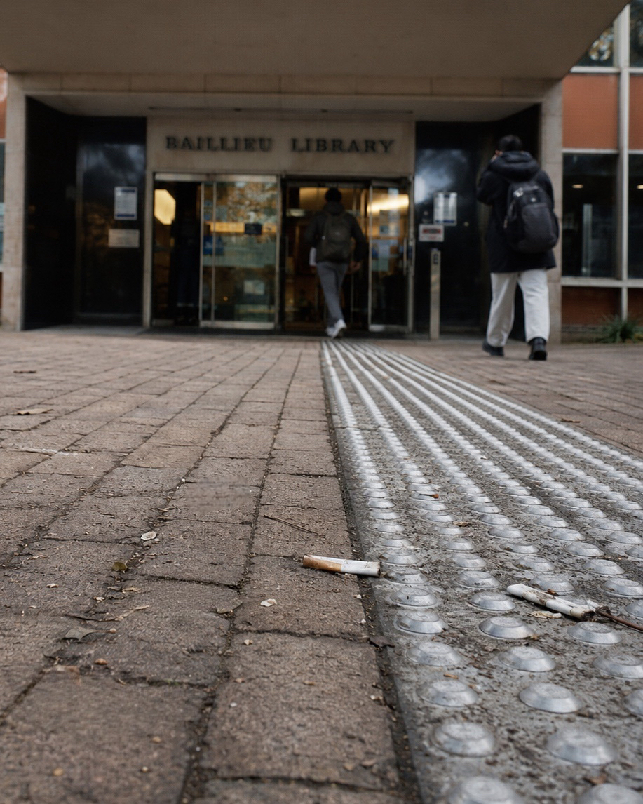
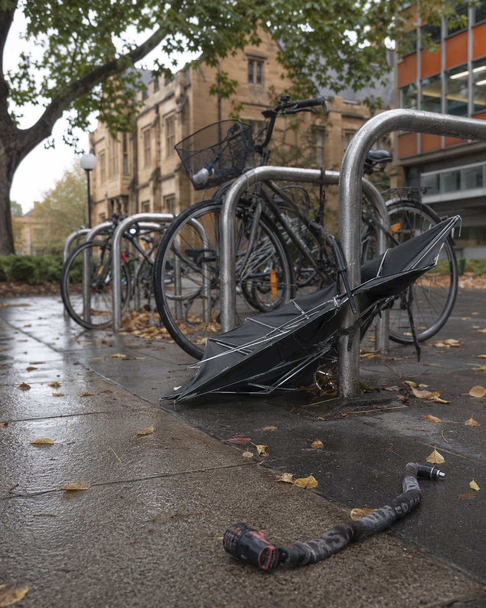
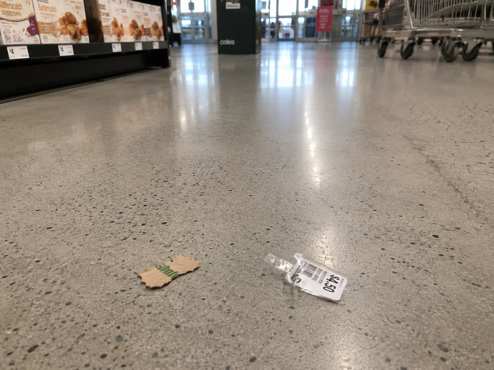

Ambient Sound
Urban Waste Specimen Box — A Digital Collection of the Anthropocene
7 specimens · 5 locations · 1 semester · March–May 2026






When I arrived in Melbourne from China at the beginning of this year, I walked past rubbish every day without seeing it. Coffee cups on benches, cigarette butts on footpaths, plastic wrappers caught in tree roots , they were part of the background of a new city that I was too busy navigating to examine closely. I was focused on tram routes, lecture rooms, and grocery prices. The ground beneath my feet was not something I thought about.
This began to change during EDUC90006. In the early weeks, Ingold's (2000) distinction between the globe and the sphere unsettled something in me. He argues that we do not observe the environment from the outside, like scientists looking down at a globe; rather, we dwell within it, immersed in weather, movement, and material. I realised that my experience of Melbourne's environment was not happening in national parks or nature reserves , it was happening on the footpath between my apartment and the tram stop, on the wet ground outside Baillieu Library, on the sand beside the Yarra River. And the objects I had been stepping over were part of that environment, not separate from it.
By Week 7, when we read Plumwood's (2008) essay on the invisibility of death and waste in modern consumer culture, I had already been photographing discarded objects for several weeks. But Plumwood gave me the language to understand what I was doing. She argues that we consume without confronting what remains , we drink coffee without thinking about the cup, we eat without thinking about the animal. I recognised this pattern in myself. I had been consuming Melbourne , its coffee, its transport, its supermarkets , without ever looking at what I left behind. The photographs I had been taking were, I now understood, an attempt to make that invisible residue visible again.
The Forgotten Herbarium is the result of this shift. It is an interactive website designed to resemble a natural history museum specimen cabinet. When the viewer opens the page, they see a dark background , evoking the velvet display fabric of museum cases , with eight numbered cells arranged in a grid. Each cell contains a circular thumbnail photograph and a pseudo-Latin species name. This layout is intentional: the grid format borrows the visual authority of scientific classification, creating an immediate tension between the formality of the presentation and the ordinariness of the objects inside. By framing a Coles price tag or a crushed Myki card as a specimen, the work asks the viewer to reconsider what deserves careful attention , echoing Snaza et al.'s (2014) challenge to the assumption that only human subjects are worthy of study.
Clicking on a specimen opens a detailed record: an enlarged photograph, a collection ID, the pseudo-Latin name with etymology, the location and date of collection, and a written field description. Each record also includes an embedded audio recording of the ambient sound at the moment of collection , tram bells, wind, birdsong, supermarket announcements, footsteps. The audio is not decorative. It exists because the act of collecting each specimen was fundamentally embodied: I had to stop walking, crouch down, hold my phone close to the ground, and listen. Payne (1997) argues that environmental education must engage the body and the senses, not just the mind. The audio preserves this sensory dimension, transporting the viewer from a screen back into the specific weather, noise, and atmosphere of each encounter.
The eighth cell is empty. It is labelled Species Ignota Futurum — unknown future species , and contains no photograph, no audio, no description. This is the most important cell in the herbarium, because it refuses to close the collection. It says: there are more specimens out there, in your own city, on your own street, under your own feet. The herbarium is not a finished archive. It is an invitation to keep noticing.
Looking back across the semester, the most significant change in me is not that I now know more about environmental theory , though I do. It is that I now walk differently. I look at the ground. I notice what has been left behind. I understand that environment is not somewhere else; it is the coffee cup on the bench beside the clock tower, the broken umbrella tangled in a bike rack in the rain, the snack wrappers slowly becoming part of a tree along the Birrarung. This herbarium is a record of that change.
Ingold, T. (2000). Globes and spheres: The topology of environmentalism. In The Perception of Environment: Essays on Livelihood, Dwelling and Skill (pp. 259–272). Routledge.
Payne, P. (1997). Embodiment and environmental education. Environmental Education Research, 3(2), 109–240.
Plumwood, V. (2008). Tasteless: Towards a food-based approach to death. Environmental Values, 17(3), 323–330.
Snaza, N., Appelbaum, P., Bayne, S., Carlson, D., Morris, M., Rotas, N., Sandlin, J., Wallin, J., & Weaver, J. (2014). Toward a posthumanist education. Journal of Curriculum Theorizing, 30, 39–55.